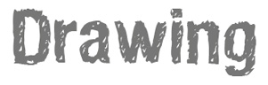

The lanuage of drawings is universal and can not be replaced by any other language. Drawing is an universal skill, you are also able to do it very well! Remember:
- Bad drawings do not exist!
- The process is the product.
- You don’t need to be an artist to come up with great things. - The most important is what you are expressing, rather than esthetics.
- And, the most important: have fun! :)
You will be able to download printables soon!